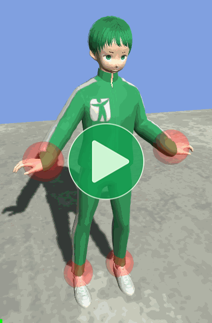
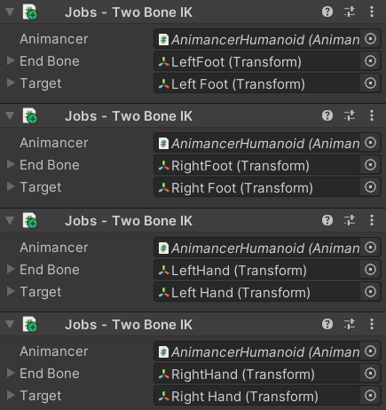

Location: Samples/10 Animation Jobs/01 Two Bone IK
Recommended After: Puppet
Learning Outcomes: in this sample you will learn:
How to apply a custom Inverse Kinematics algorithm.
How to use the
TwoBoneIKJobfrom the Animation Jobs Samples.
Summary
This sample demonstrates how the TwoBoneIKJob from the Animation Jobs Samples can be used with Animancer. This achieves a similar result to the Puppet sample, but unlike Unity's inbuilt Inverse Kinematics system which only works for Humanoid Rigs, this allows you to apply IK to a Generic Rig as well.
- Define a job by making a
structthat implementsIAnimationJob. - On startup, make an instance of your job and configure its fields as necessary:
MyJobStruct job = new MyJobStruct();. - Add the job to Animancer using
animancer.Graph.InsertOutputJob(job);.
The job in this sample could be used in a real project, however Unity's Animation Rigging package contains a much more powerful system which also uses Animation Jobs and can be used alongside Animancer.
Overview
This sample uses two new scripts:
- The
TwoBoneIKcomponent applies IK to one limb, so the character has 4 of them. - Each
TwoBoneIKadds aTwoBoneIKJobto Animancer'sPlayableGraph, which is where the actual IK algorithm is implemented.
It also reuses the MouseDrag and TransformResetter scripts from the Puppet sample.
{kind=link}
Job Script
An Animation Job is a struct which implements the IAnimationJob interface. In this case, that's the TwoBoneIKJob script which was taken directly from the Animation Jobs Samples without any notable modifications. The contents of the script will not be explained here since this sample is about how to use jobs, not how to implement IK.
using UnityEngine;
using UnityEngine.Animations;
public struct TwoBoneIKJob : IAnimationJob
{
public TransformSceneHandle effector;
public TransformStreamHandle top;
public TransformStreamHandle mid;
public TransformStreamHandle low;
public void Setup(Animator animator, Transform topX, Transform midX, Transform lowX, Transform effectorX)
{
top = animator.BindStreamTransform(topX);
mid = animator.BindStreamTransform(midX);
low = animator.BindStreamTransform(lowX);
effector = animator.BindSceneTransform(effectorX);
}
public readonly void ProcessRootMotion(AnimationStream stream)
{
}
public readonly void ProcessAnimation(AnimationStream stream)
{
Solve(stream, top, mid, low, effector);
}
/// <summary>
/// Returns the angle needed between v1 and v2 so that their extremities are
/// spaced with a specific length.
/// </summary>
/// <returns>The angle between v1 and v2.</returns>
/// <param name="aLen">The desired length between the extremities of v1 and v2.</param>
/// <param name="v1">First triangle edge.</param>
/// <param name="v2">Second triangle edge.</param>
private static float TriangleAngle(float aLen, Vector3 v1, Vector3 v2)
{
float aLen1 = v1.magnitude;
float aLen2 = v2.magnitude;
float c = Mathf.Clamp((aLen1 * aLen1 + aLen2 * aLen2 - aLen * aLen) / (aLen1 * aLen2) / 2.0f, -1.0f, 1.0f);
return Mathf.Acos(c);
}
private static void Solve(AnimationStream stream, TransformStreamHandle topHandle, TransformStreamHandle midHandle, TransformStreamHandle lowHandle, TransformSceneHandle effectorHandle)
{
Quaternion aRotation = topHandle.GetRotation(stream);
Quaternion bRotation = midHandle.GetRotation(stream);
Quaternion eRotation = effectorHandle.GetRotation(stream);
Vector3 aPosition = topHandle.GetPosition(stream);
Vector3 bPosition = midHandle.GetPosition(stream);
Vector3 cPosition = lowHandle.GetPosition(stream);
Vector3 ePosition = effectorHandle.GetPosition(stream);
Vector3 ab = bPosition - aPosition;
Vector3 bc = cPosition - bPosition;
Vector3 ac = cPosition - aPosition;
Vector3 ae = ePosition - aPosition;
float abcAngle = TriangleAngle(ac.magnitude, ab, bc);
float abeAngle = TriangleAngle(ae.magnitude, ab, bc);
float angle = (abcAngle - abeAngle) * Mathf.Rad2Deg;
Vector3 axis = Vector3.Cross(ab, bc).normalized;
Quaternion fromToRotation = Quaternion.AngleAxis(angle, axis);
Quaternion worldQ = fromToRotation * bRotation;
midHandle.SetRotation(stream, worldQ);
cPosition = lowHandle.GetPosition(stream);
ac = cPosition - aPosition;
Quaternion fromTo = Quaternion.FromToRotation(ac, ae);
topHandle.SetRotation(stream, fromTo * aRotation);
lowHandle.SetRotation(stream, eRotation);
}
Responsibilities
Since the original TwoBoneIK script was just a sample, it contained a variety of responsibilities which would not need to be squeezed into a single script in a real system like Animancer. The following table compares the differences between the original and the TwoBoneIK script used in this sample:
| Original | Animancer |
|---|---|
Loads an AnimationClip from a hard coded resource path. |
Uses PlayAnimationOnEnable from the Quick Play sample so the animation can be assigned in the Inspector. In a real project, you would generally have other scripts controlling the animations. |
Returns early if any of the references are null to avoid causing exceptions. |
The script serves no purpose if the references are null so it's better to cause exceptions instead of having it silently fail. |
| Creates a sphere in the script for the IK target. | Uses a serialized field to reference an existing target object since there's no point in hard-coding it in the script. |
| Provides no way to move the IK target, so you need to use the Scene view gizmos or the Inspector. | Uses the MouseDrag script from the Puppet sample to allow the IK target to be dragged around in the Game view. |
Creates a new PlayableGraph to play the animation and manually destroys it in OnDisable. |
The job is inserted into Animancer's existing graph. |
Creates a AnimationScriptPlayable to run the TwoBoneIKJob and connects it to the AnimationClipPlayable of the animation and the graph output. |
Uses AnimancerGraph.InsertOutputJob to have animancer do all that internally. |
Fields
| Code | Inspector |
|---|---|
|
While the reduced complexity from the original script is nice, the most important improvement is actually the fact that the job gets inserted into the |
 |
Initialization
The first thing we need to do is get the bones we want to apply the IK to, simply using the parent of the _EndBone we assigned in the Inspector (midBone) and the parent of that bone (topBone):
protected virtual void Awake()
{
Transform midBone = _EndBone.parent;
Transform topBone = midBone.parent;
Then we create the TwoBoneIKJob and call its Setup method to specify the Animator, bones, and target object:
TwoBoneIKJob twoBoneIKJob = new TwoBoneIKJob();
twoBoneIKJob.Setup(_Animancer.Animator, topBone, midBone, _EndBone, _Target);
And finally, we call AnimancerGraph.InsertOutputJob to insert it in Animancer's PlayableGraph between the finaly output and whatever playable was previously connected to the output:
_Animancer.Graph.InsertOutputJob(twoBoneIKJob);
}
After that, Animancer will still be able to play animations and do everything else normally, except that every frame before the animations are applied to the model the TwoBoneIKJob.ProcessAnimation will be executed (once for each of the 4 instances we set up to control the 4 limbs). That method does some math in order to determine how it needs to rotate the midBone and topBone in order to bring the position of the _EndBone as close to the position of the _Target as possible.
Conclusion
As noted earlier, this IK system could be used in a real project, however the Animation Rigging package contains a much better system which also uses Animation Jobs and can be used alongside Animancer without any modification. Note that the system does have some limitations which are explained on that page.